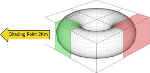
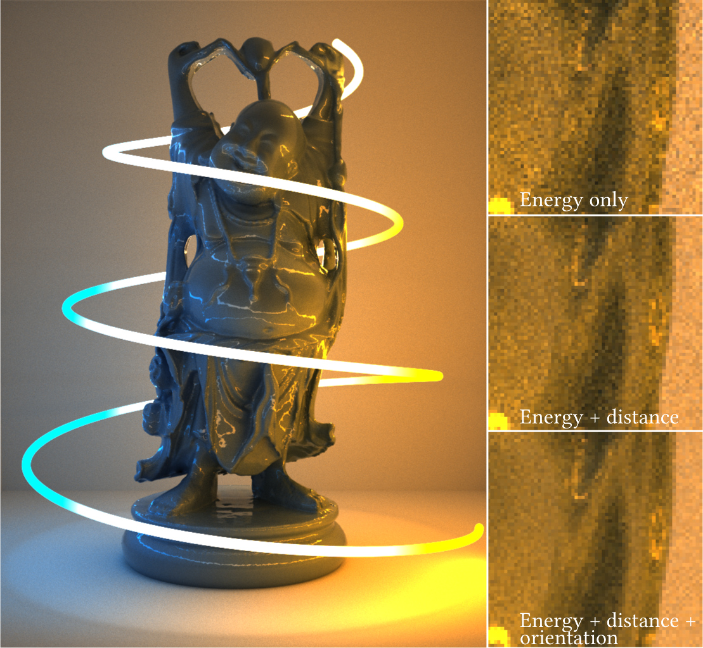

Importance Sampling of Many Lights with Adaptive Tree Splitting
Alejandro Conty and Christopher Kulla
Sony Pictures Imageworks
What we are trying to achieve ...
For this typical scenario: 363,036 lights
Our method
- A BVH tree over the lights is used for importance sampling
- There is no learning: based on heuristics
- Accounts for energy, distance and orientation, not visibility
- No grids or caches, low memory overhead
Motivation
- Originally designed for mesh lights
- They are large collections of small emitters
- Avoid choosing the wrong triangle (distant or pointing away)
- Usable for collections of arbitrary lights
- Avoid grid/learning based methods to:
- Optimize time to first pixel
- Reduce memory footprint and work on volumes
Our contributions
- An approach for building the BVH of lights
- An importance measure for light clusters
- A split sampling method to reduce variance
Building the tree
- Top-down approach like for raytracing
- Bounding boxes are scanned in all axes for ideal split
- A heuristic gives a score for each candidate
- Account for the size of the box (Surface Area)
- Also for the orientation bounds
Orientation bounds
An axis and two angles $\theta_o, \theta_e$. The latter being the emission extent from the normal: $\pi/2$ for lambertian emitters, smaller for spot lights.
Size of the 3D bounding box
- Big boxes with many triangles are bad for raytracing because the probability of intersection is high
- For us they are bad because they poorly represent their members when computing importance
Orientation bounds of the contained emitters
- We measure their solid angle impact $M_\Omega$
- We also try to keep it small because:
- They will appear to affect the whole scene otherwise
- They misrepresent their contents for the importance measure
Result: Surface Area Orientation Heuristic
$\mathrm{Cost}(l, r) = \frac{E(l) M_A(l) M_\Omega(l) + E(r) M_A(r) M_\Omega(r)}{M_A M_\Omega}$
Proposed cost heuristic for an $l, r$ cluster split where $M_A$ is the surface area, $M_\Omega$ our orientation measure and $E_l,E_r$ are the energies on each side of the split.
We always split in 3D world axes, but taking into account orientation measure $M_\Omega$ for quality.
Cluster division and orientation
Left split reduces the orientation bounds
More on orientation bounds
The $\theta_e$ emission part of the bounds will be cosine weighted. Note our spots are just limited flat emitters
Bounds of multiple emitters
Bounds are incrementally expanded to cover multiple elements in a cluster
Orientation Measure
Where $\theta_w=\min(\theta_o + \theta_e,\pi)$
Tree traversal
- An importance function directs the emitter selection
- At each branch we pick between left or right
- Then stretch the random number and continue recursively
- We choose the emitter with a single random number (sample warping)
Cluster tree

Importance measure changes with shading point
Importance Function
- A product of three factors $B \cdot G \cdot O \cdot E$
- $B$: A simple BSDF approximation
- $G$: The geometric term $(1/d^2)$
- $O$: The emitter orientation factor
- $E$: Total energy inside the cluster
Conservative angles
Varying with the cluster size, the uncertainty angle $\theta_u$ has to be subtracted when using the center.
BSDF Approximation
- Can be as simple as a diffuse term
- Include irradiance $|\cos\theta_i|$
- But remember to subtract $\theta_u$ from $\theta_i$!
- Or you can use a BSDF proxy
- Come to our talk next week!
The orientation factor
The equation
- $I = \frac{f_a |\cos\theta_i|\ \cos(\theta)\ E}{d^2}$
- $\theta_u$ needs to be subtracted from $\theta_i$ and $\theta$
- If $\theta > \theta_e$ then $I$ is zero
- For participating media:
- Geometric decay is linear due to line integral ($1/d$)
- Angle to bounds $\theta$ comes from a maximization formula (see paper)
Orientation matters
Faces in the green box are more important
Importance comparison
Applied to volumes
Adaptive sampling splitting
- Our importance measure is weak when the cluster is near
- $1/d^2$ will vary too much and differ from the center
- The uncertainty angle will be too big
- For single sample mesh lights we just clamp $d$ to a fraction of the cluster's bounding sphere radius
For many lights it can be improved
- Use more than just 1 random light for a shading point
- If a cluster is too big sample both sub-branches
- Don't choose one or the other
- The smaller clusters will yield a more reliable importance
- Keep splitting until a heuristic says otherwise
- It is better than just increasing SPP
Split sampling
Nearby clusters are more likely to be split
Predicted variance: our split heuristic
- First we record energy variance $V[e]$ in every cluster
- Then variance of the geometric term from the shading point $V[g] = \frac{b^3 - a^3}{3 (b - a) a^3 b^3} - \frac{1}{a^2 b^2}$
- $\sigma^2 = \left(V[e] V[g] + V[e] E[g]^2 + E[e]^2 V[g]\right)\ N^2$
- $N$ is the number of emitters in the cluster
- $a, b$ are the minimum and maximum distances given the cluster
Effect of splitting
This scene contains 10,000 lights. On the second frame split sampling is using around 20 lights per shading point
A million lights on a Cornell box. Blue areas shade 2-3 lights while the top ones in red shade 28.
That's it!
36,000 mesh lights 125spp, 27 shadow rays per sample
Thanks for listening!
Questions?